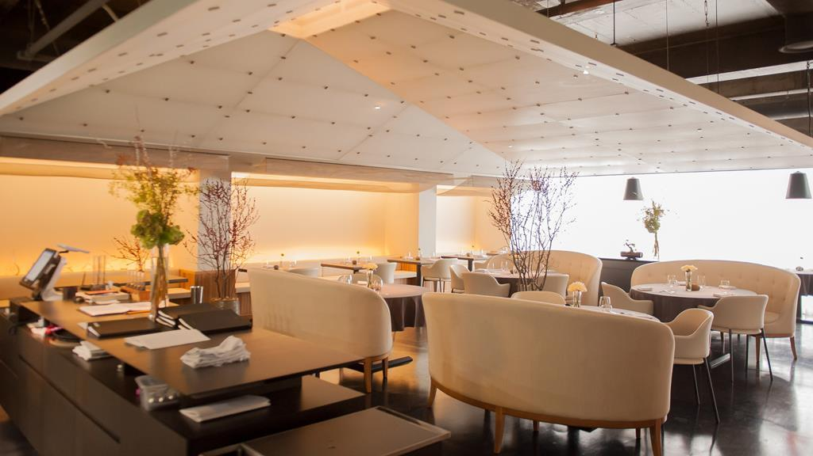
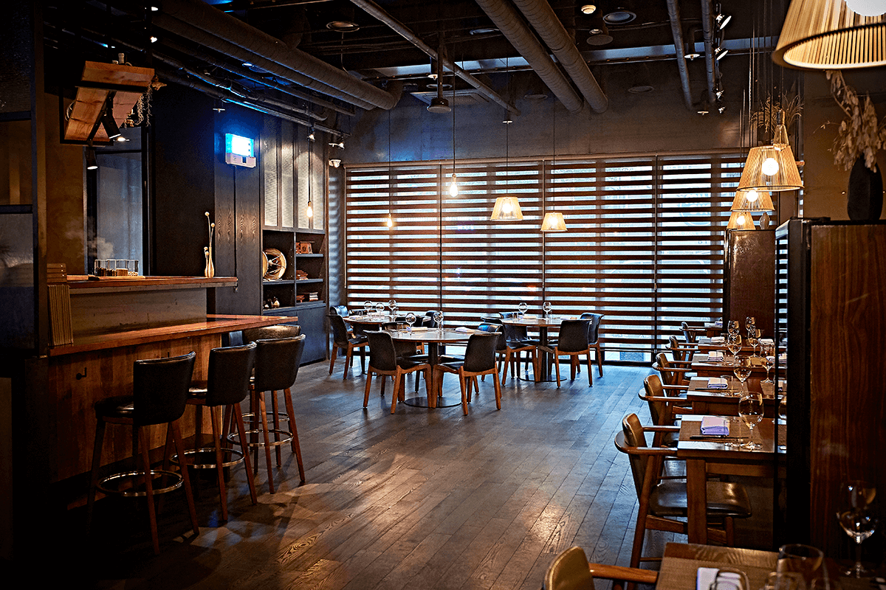

Restaurantes de Corea del Sur
Jungsik

Ubicación: Seúl, Corea del Sur
Especialidad: Cocina de autor con influencias coreanas.
Descripción: Restaurante elegante y sofisticado con estrellas Michelin.
Reserva
Gaon

Ubicación: Seúl, Corea del Sur
Especialidad: Alta cocina coreana.
Descripción: Restaurante reconocido internacionalmente por su excelencia culinaria.
Reserva
Tosokchon

Ubicación: Seúl, Corea del Sur
Especialidad: Sopa de pollo ginseng.
Descripción: Famoso por su sopa de pollo tradicional, un plato coreano clásico.